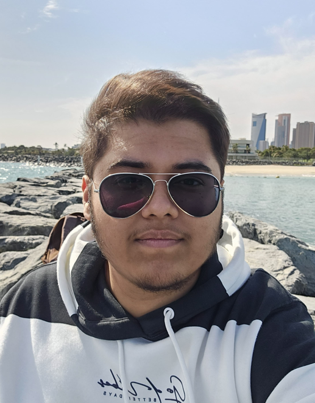

Abdullah Shaikh - My Resume

Professional Summary:
- Im a novice web developer and designer. This is my first real project.
- Im creating this resume website to start my web development journey.
- This web development project is for the task titled "Capstone Project 1". This project is about building a simple online resume website.
- Im very excited to finally start making something which can be both educational and evolutionary for my web dev journey.
Education:
Al Manar International School, Yanbu (2009 - 2010)
- Lower Kindergarten - Upper Kindergarten
Radhwa International School, Yanbu (2010 - 2022)
- Class 1 - Class 12 (CBSE)
Heriot Watt University, Dubai (2023 - 2027)
- Bachelor of Science (Hons) in Computer Science
Work Experience:
Founder and CEO - Cyrix Corporation, Silicon Valley, CA (2019 - Present)
- Overseeing key operations and managing the company's strategic developments
Waiter, Dishwasher - KFC, Al Barsha, UAE (2015 - 2018)
- Part-time work to make ends meet.
Skills:
- Team Management
- Product Advertisement
- Risk Management
- Full Stack Web Development
- Certified Technical Advisor
- Computer Scientist
- Fluent and Efficient Communication
- Diplomatic Business Relations
Awards & Certifications:
Silicon Valley Visionary Award (2019)
- Recognizing pioneers shaping the future of technology.
Self-Made CEO of the Year (2019)
- Awarded for outstanding entrepreneurial leadership.
Excellence in AI & Automation Award (2021)
- Given to leaders advancing artificial intelligence and automation.
Tech Leadership Excellence Award (2022)
- Recognizing exceptional leadership in the technology sector.
Disruptive Innovator of the Year (2023
- Honoring individuals revolutionizing industries through groundbreaking technology.
Other